Heater & Air Conditioner System Function Inspection |
| 1. Cooling Performance Inspection |
Install the air conditioner tool set to the vehicle.
Set the vehicle to the following conditions. [*1]
| Item | Condition |
|---|---|
| Vehicle Body | Stopped in the shade |
| Door | Fully open |
| A/C Switch | ON |
| Engine Speed | 1500r/min |
| Air Inlet Damper Position | Recirculation position |
| Outlet Damper Position | FACE |
| Set Temperature | MAX COLD |
| Blower Speed | HI |
| A/C Inlet Temperature *2 | 30 to 35°C |
| Condenser Pressure (Gauge High Pressure Side) *3 | 1.37 to 1.57MPa(14 to 16kgf/cm2) |
Place a psychrometer (necessary to determine humidity) at the air inlet, insert the bulb of a dry bulb thermometer into the center of the outlet, and measure.
Operate the A/C under the conditions in [*1] and allow the outlet temperature to stabilize. (Approx. 5-6 minutes)
Measure the dry bulb and wet bulb temperatures at the inlet and the outlet temperature.
Apply the measured dry and wet bulb temperatures at the inlet to the psychrometric chart to determine the relative humidity.
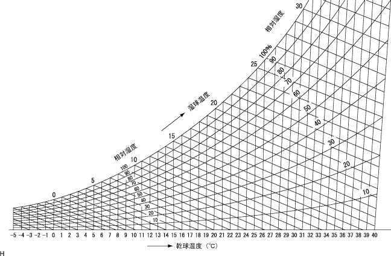
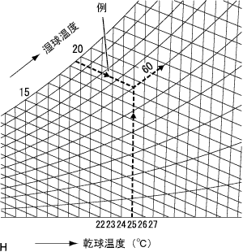 |
As an example of determining relative humidity, if the dry bulb temperature of the psychrometer set at the air inlet is 25°C and the wet bulb temperature is 19.5°C, the intersection of the dotted lines in the illustration is the relative humidity, which in this case is 60%.
Apply the difference between the measured inlet and outlet temperatures and the relative humidity to the standard performance chart to check the cooling performance.
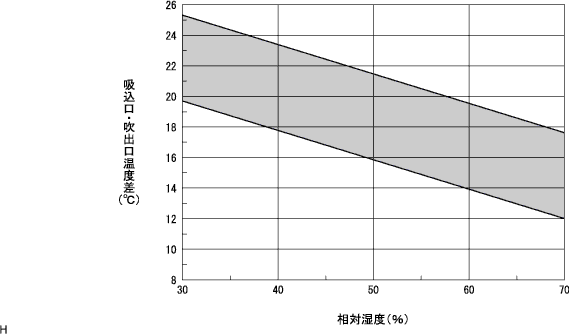
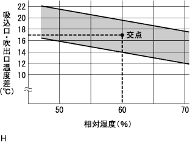 |
As an example of determining cooling performance using the standard performance chart, the case where the difference between the dry bulb temperature at the air inlet and the dry bulb temperature at the outlet is 17°C and the relative humidity is 60% is shown.
| 2. Refrigerant Gas Pressure Inspection |
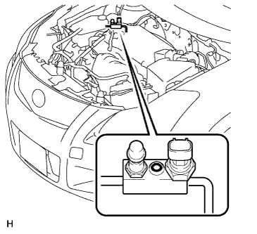 |
Refrigerant Amount Inspection
Check the sight glass of the air conditioner tube and accessory assembly.
Set the vehicle to the following conditions. [*1]
| Item | Condition |
|---|---|
| Door | Fully open |
| Set Temperature Display | MAX COOL COLD |
| Engine Speed | 1500r/min |
| Blower Speed | HI |
| A/C | ON |
Check the sight glass under the conditions in [*1].
| Symptom | Refrigerant Amount | Action |
|---|---|---|
| Bubbles in the sight glass | Insufficient |
|
| No bubbles in the sight glass | None, insufficient or excessive | Check symptoms (*2) and (*3) |
| No temperature difference between compressor inlet and outlet (*2) | Empty or nearly empty |
|
| Significant temperature difference between compressor inlet and outlet (*3) | Proper or excessive | Check symptoms (*4) and (*5) |
| Immediately after the A/C is turned off, the refrigerant gas in the sight glass remains clear (*4) | Excessive |
|
| Immediately after the A/C is turned off, the refrigerant gas foams and then becomes clear (*5) | Proper | - |
Refrigerant Pressure Inspection with Gauge
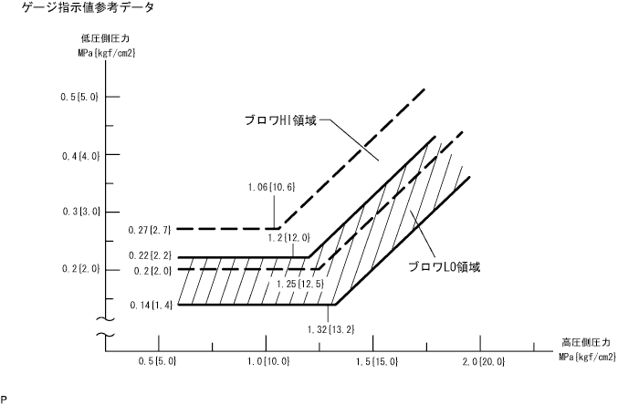
Install the air conditioner tool set.
Set the vehicle to the following conditions. [*2]
| Item | Condition |
|---|---|
| Engine | After warm-up |
| Door | Fully open |
| A/C | ON |
| Engine Speed | 1500r/min |
| Recirculation Switch | RECIRC |
| Set Temperature Display | MAX COOL COLD |
| Blower Speed | HI |
| A/C Inlet Temperature | 30 to 35°C |
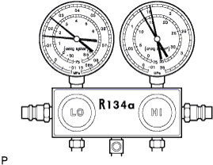 |
Check the gauge readings under the conditions in [*2].
Check the gauge readings under the conditions in [*2].
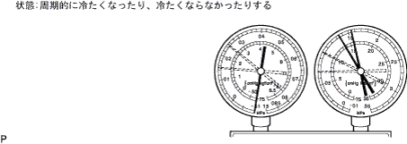
| Symptom | Cause | Diagnosis | Action |
|---|---|---|---|
| During operation, the pressure on the low pressure side alternates between vacuum and normal | Moisture that has entered the cooling system freezes at the expansion valve orifice, temporarily stopping refrigerant circulation, but normal condition is restored after the ice melts |
|
|
Check the gauge readings under the conditions in [*2].
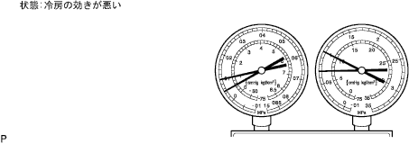
| Symptom | Cause | Diagnosis | Action |
|---|---|---|---|
| There is a gas leak somewhere in the cooling system |
|
|
Check the gauge readings under the conditions in [*2].
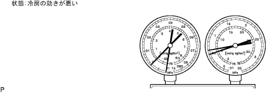
| Symptom | Cause | Diagnosis | Action |
|---|---|---|---|
| Refrigerant flow is obstructed by dirt in the cooler condenser core | Cooler condenser core clogged | Replace the cooler condenser core |
Check the gauge readings under the conditions in [*2].
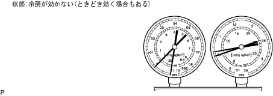
| Symptom | Cause | Diagnosis | Action |
|---|---|---|---|
|
| Refrigerant gas does not circulate |
|
Check the gauge readings under the conditions in [*2].
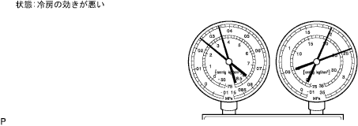
| Symptom | Cause | Diagnosis | Action |
|---|---|---|---|
|
|
|
|
Check the gauge readings under the conditions in [*2].
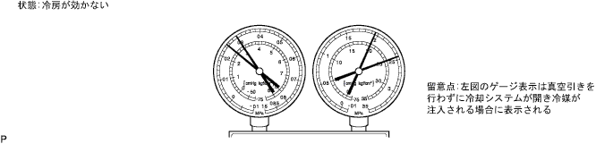
| Symptom | Cause | Diagnosis | Action |
|---|---|---|---|
| Air in the cooling system |
|
|
Check the gauge readings under the conditions in [*2].
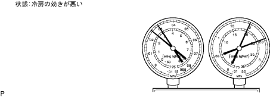
| Symptom | Cause | Diagnosis | Action |
|---|---|---|---|
| Cooler expansion valve trouble |
| Replace the cooler expansion valve |
Check the gauge readings under the conditions in [*2].
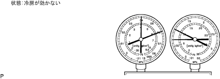
| Symptom | Cause | Diagnosis | Action |
|---|---|---|---|
| Leak inside the cooler compressor |
| Repair or replace the cooler compressor |
| 3. Compressor Assembly (with Pulley) Operation Inspection (Engine Type 2AZ-FE) |
Put a mark on the compressor assembly (with pulley) at the position shown in the illustration.
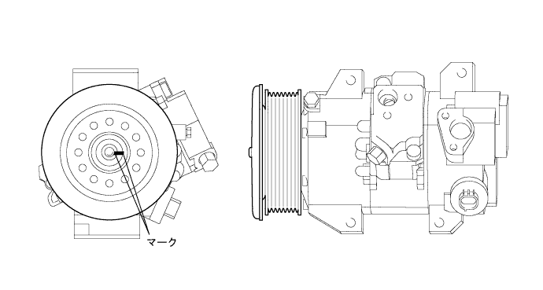
Start the engine and check that the mark on the compressor assembly (with pulley) rotates together with the pulley.
| 4. Inspect Cooler Condenser Assembly |
If the fins of the cooler condenser assembly are dirty, clean them with water and dry them with compressed air.
If the fins of the cooler condenser assembly are bent, straighten them with a screwdriver or pliers.
| 5. Refrigerant Gas Leak Inspection |
Using a halogen leak detector, check the piping joints for gas leaks.
If there is a gas leak at a piping joint, check the torque of the joint.